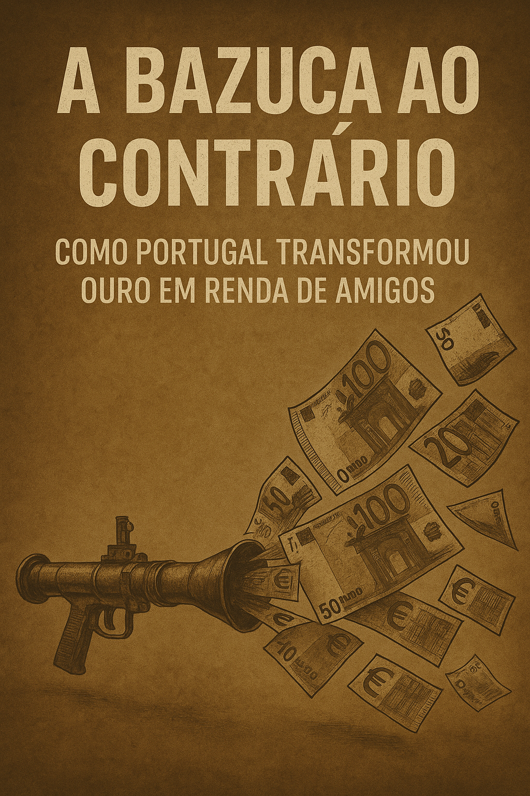

Publicado em 2025-05-10 14:31:20
Por Augustus Veritas Lumen | Publicado a 10 de May de 2025 | Categoria: Política / Europa / Corrupção
“Deram-nos uma bazuca para reconstruir o país. Os ladrões pegaram nela, viraram-na ao contrário e dispararam sobre a esperança.”
O Plano de Recuperação e Resiliência (PRR), pomposamente apelidado de "bazuca europeia", entregou a Portugal 22,16 mil milhões de euros. Era a oportunidade para transformar o país, modernizar infraestruturas, apoiar quem mais precisava, e corrigir décadas de atraso. Mas em vez disso... foi mel para os mesmos abelhões do costume.
Segundo o Tribunal de Contas Europeu, os fundos foram atribuídos sem exigência de prova de resultados nem de custos reais. Em linguagem simples: podiam gastar milhões sem provar o que fizeram nem quanto custou. Para Portugal, isto não foi apenas uma falha — foi um convite ao saque.
Empresas de fachada, consultoras de papel, projetos duplicados, plataformas sem impacto, e reformas fictícias — tudo embrulhado em "narrativas de transformação". Na prática, milhões escorreram para bolsos e interesses bem colocados. E quando tudo terminar, não haverá forma de pedir devolução. O crime é legal, o desvio é institucional.
A bazuca que devia reconstruir, destruiu a esperança de justiça. Serviu de prémio aos que já estavam sentados à mesa — os de sempre. Os amigos do Estado, os que saltam de cargo em cargo, os que já aprenderam a usar as palavras “digital”, “resiliência” e “transição” como chaves-mestras do cofre europeu.
Bruxelas assina, mas não controla. E os governos fingem cumprir metas — com powerpoints, relatórios vagos e consultorias caras. Os cidadãos, esses, continuam à espera: de comboios que não vêm, hospitais que não avançam, apoios que não chegam.
Este é o verdadeiro escândalo: um país que transforma ouro em pó, progresso em propaganda, e esperança em orçamento para amigos. Portugal não usou a bazuca para atacar o atraso. Usou-a para premiar os que vivem do Estado como se fosse herança pessoal.
E no fim, quem paga? O povo. Sempre o povo.
Mas haverá quem escreva. Haverá quem denuncie. Porque enquanto houver uma voz lúcida, há ainda pólvora na verdade. E essa não se compra nem se desvia.